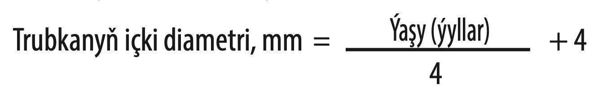

Ýokary derejede kömek bermek diňe bir operasiýanyň şowly bolmagyna esaslanmaýar. Köp ýagdaýlarda hirurgiki kömegiň soňy dogry operasiýadan öňki, operasiýa wagtynda anesteziologik kömege we operasiýadan soňky doly göwrümdäki idege bagly bolup durýar.
9.1.1 Operasiýadan öňki kömek
Çaga we onuň ene-atalary degişli görnüşde operasiýanyň geçirilmegine taýýarlanan bolmaly we ony geçirmäge öz razyçylygyny bermeli.
 Hirurgiki kömegiň näme üçin gerekligini we ondan nähili netilelere garaşylýanlygyny we operasiýadan garaşylýan kömegi we mümkin bolan howpy ene-atalara düşündiriň.
Hirurgiki kömegiň näme üçin gerekligini we ondan nähili netilelere garaşylýanlygyny we operasiýadan garaşylýan kömegi we mümkin bolan howpy ene-atalara düşündiriň.- Çaga bedeniniň operasiýany göterip biljekdigine göz ýetiriň:
 Gaýragoýulmasyz operasiýadan öň gerek bolan ýagdaýynda reanimasion çäreleri geçiriň, şeýlede suwuklygyň defisidini (damardan fiziologik erginiň bolýus möçberlerini (10-20 ml/kg) guýmaklyk bilen geçiriň we gerek bolan ýagdaňlarynda ony gaýtalaň). Suwuklyk balansynyň dikelmeginiň alamaty bu diureziň kadalaşmagy bolup durýar.
Gaýragoýulmasyz operasiýadan öň gerek bolan ýagdaýynda reanimasion çäreleri geçiriň, şeýlede suwuklygyň defisidini (damardan fiziologik erginiň bolýus möçberlerini (10-20 ml/kg) guýmaklyk bilen geçiriň we gerek bolan ýagdaňlarynda ony gaýtalaň). Suwuklyk balansynyň dikelmeginiň alamaty bu diureziň kadalaşmagy bolup durýar.- Ganazlygyň (anemiýanyň) korreksiýasyny geçiriň. Agyr bu ýagdaýlarda köp gany geçirmeli wagty anemiýa kislorody geçirmeklige päsgel berýär, şol sebäpli hem ýürege agram düşýär. Hirurgiki emler gan ýitirmeklik bilen geçmegi mümkin, anesteziýa bolsa ganyň kislorody geçirijiligine täsir edýär. Şol sebäpli operasiýadan öň çaganyň gemoglobinini barlamaly we onuň ýerli kada görkezijilere gabat gelýänligine göz ýetirmeli.
- Gan goýbermekligi meýilleşdiriň, anemiýany gaýragoýulmasyz ýagdaýda korreksiýa etmek üçin, mysal üçin gaýragoýulmasyz operasiýalarda taýýar boluň.
- Meýilleşdirilen oparsiýalarda bolsa, ganazlygy agyzdan berilýän serişdeler bilen korreksiýa ediň (goşundy 2).
- Gemoglobinopaatiýaly çagalar üçin (gemoglobinopatiýa S, gemoglobinopatiýa C, orak – şekilli anemiýa ýa-da talassemiýaly) hirurgiki kömek gerek bolanda aýratyn operasiýadan öňki kömegiň görnüşleri gerek bolýar. Bular bilen tanyşmaklyk üçin pediatriýa boýunça standart okuw kitaplaryna ýüzleniň.
- Çaganyň iýmit statusynyň gowy ýagdaýdadygyna göz ýetiriň. Gowy iýmitlenme operasion ýaranyň çalt bitmegi üçin hem hökmanydyr.
- Anesteziýa geçirilmezden ozal çaganyň aşgazanynyň boşlygyna göz ýetiriň.
- 12 aydan kiçi çagalar üçin esasy düzgün: çaga operasiýadan öň 8 sagadyň dowamynda gaty iýmit, ene süýdini ýerini tutujylary – 6 sagadyň dowamynda, goýy düzümsiz suwuklyklary we ene süýdini -4 sagadyň dowamynda iýmeli däl.
- Egerde uzak wagtlap (>6 s) aç saklamaklyk meýilleşdirilýän bolsa, onda damardan glýukoza saklaýan suwuklyklar goýberiň.
- Operasiýadan öňki barlamhana derňewleriniň adaty belli ähmiýeti ýok. Muňa seretmezden mümkinçilik
bar bolsa, bu barlaglary geçiriň:
- 6 aýa çenli çagalarda: gemoglobini we gematokriti barlaň.
- 6 aýdan 12 ýaşa çenli çagalar:
- uly bolmadyk operasiýalar (mysal üçin, ingini aýyrmaklyk) – öňünden barlaglar hökmany däl;
- uly operasiýalar – gemoglobin we gematokriti barlamaly, ganyň toparyny we ganlaryň ylalaşyjylygy barlam üçin testi geçiriň, eger-de gan goýbermeklik gerek bolsa.
- Çaga doly barlanandan soň mümkin goşmaça barlaglaryň geçirilmekliginiň zerurlygy ýüze çykar.
- Operasiýadan öň antibakterial serişdeleri bellemeklik indiki ýagdaýlarda gerek:
- Hapalanan ýa-da infisirlenen ýaralary inkär edip bolmaýan ýagdaýlar (içegede ýa-da peşew haltada operasiýalar geçirilende):
 Içege: ampisillin (25–50 mg/kg sanjym ýa-da damardan 4 sapar günüň dowamynda), gentamisin (7,5 mg/kg sanjym ýa-da damardan 1 sapar günüň dowamynda) we metronidazol (7,5 mg/kg 3 sapar günüň dowamynda operasiýadan öň 3-5 günüň dowamynda we ondan soň beriň.
Içege: ampisillin (25–50 mg/kg sanjym ýa-da damardan 4 sapar günüň dowamynda), gentamisin (7,5 mg/kg sanjym ýa-da damardan 1 sapar günüň dowamynda) we metronidazol (7,5 mg/kg 3 sapar günüň dowamynda operasiýadan öň 3-5 günüň dowamynda we ondan soň beriň.- Bölüp çykaryş ýollary: ampisillin (25-50 mg/kg sanjym ýa-da damardan 4 sapar günüň dowamynda beriň) we gentamisin (7,5 mg/kg sanjym ýa-da damardan 1 sapar günüň dowamynda) operasiýadan öň 3-5 günüň dowamynda beriň.
- Endokardit döremekliginiň ýokary howpynda (doga ýürek kemislikli çagalar ýa-da klapanlaryň zeperlenmelerinde), stomatologik ýa-da ýüzde geçirilýän operasiýalarda we şeýlede dem alyş agzalarynda we gyzylödekde geçirilýän operasiýalarda:
- Amoksasillin 50 mg/kg agyzdan operasiýadan öň ýa-da, eger çaga adyzdan derman serişdelerini kabul edip bilmeýän bolsa, ampisillin 50 mg/kg damardan 30 min operasiýadan öň beriň.
- Uly operasiýalardan öň sedatik serişdeler bilen agyrsyzlandyrmany geçiriň.
9.1.2 Operasiýa wagtynda lukmançylyk kömegi
Hirurgiki kömegiň şowlylygyny gazanmaklyk üçin bu kömege gatnaşýan hemme toparyň gowy işini ýola goýmaly (hirurglar, şepagat uýalary, anesteziologlar, tehniki we beýleki kömekçi işgärler) we operasiýanyň geçirilişini dykkat bilen meýilleşdirmeli. Operasiýany geçirmeklik üçin hemme zadyň taýýarlygyna göz ýetiriň.
Anesteziýa
Kiçijik çagalar uly adamlar ýaly agyryny duýýarlar, emma olar agyryny başgaça duýdurýarlar.
- Emiň mümkin boldygyça agyrysyz bolmaklygyny gazanmaly.
- Kiçijik emlerde we çagalar özlerini rahat alyp barýan bolsalar, ýerli anesteziýa, mysal üçin:
- lidokain bilen 3 mg/kg (0,3 ml/kg 1% ergini ýa-da 0,15 ml/kg 2% ergini, maksimal möçber -200 mg) gaýtadan 2 sagadyň dowamynda etmeli däl;
- bupiwakain 0,5-2,5 mg/kg 0,25% ýa-da 0,5% etgin görnüşinde, maksimal möçber 1 mg/kg 0,25% erginiň, 0,5 mg/kg 0,5% erginiň (2,5 mg/kg).
- Has uly emlerde narkozy ulanyň.
- Кetamin – myşsalaryň relaktasiýasy gerek bolanda iň gowy anestetik.
- Damardan kateteri goýuň (käwagtlar ketamini sanjym gňrnüşinde etmek amatly bolýar).
- Narkoz bermek we ony goldamak (az wagtlyk emlerde) we agyrsyzlandyrma az wagtlyk agyryly emlerde:
- Ketamini 5–8 mg/kg sanjym ýa-da 1–2 mg/kg damardan 1 minudyň dowamynda hirurgiki anesteziýa üçin beriň, möçberi gerek bolan wagtynda düzetmek bilen; Damardan edilenden soň operasiýany 2-3 minutdan soň başlasaň bolýar, sanjym görnüşinde edelende bolsa 3-5 minutdan soň.
- Eger çaga agyryny duýýan bolsa, ketaminiň goşmaça möçberini ediň (1–2 mg/kg sanjym ýa-da 0,5–1 mg/kg damardan).
- Narkoz bermek we ony goldamak (uzak wagtlyk emlerde) damardan damjalaýyn usulda:
- Bäbekler: Ilki bilen ketaminiň ilkinji möçberini ediň 0,5-2 mg/kg, soňra damardandamjalaýyn 500 mkg/kg sagatda, bu möçberi çaganyň ýagdaýyna görä üýtgedip bilersiňiz, has çuň narkoz üçin 2 mg/kg sagatda etse hem bolýär.
- Bir ýaşa çenli çagalar we has uly ýaşly çagalar: Ilki bilen ketaminiň ilkinji möçberini ediň 0,5-2 mg/kg, soňra damardan damjalaýyn 0,5-2,5 mg/kg sagatda, bu möçberi çaganyň ýagdaýyna görä üýtgedip bilersiňiz.
- Hirurgiki em edip bolnandan soň çagany gapdal ýatyryň, çaganyň krowadyny asuda ýerde goýuň we çaganyň ozüne gelşine gözegçilik ediň.
Nämä esasy ünsi bermeli
Dem alyş ýollary
- Dem alyş ýollarynyň giňliginiň otnositel darlygy obstruksiýa alamatlarynyň döremeginiň howpyny döredýär, şonuň üçin hirurgik emler geçirilen wagtynda intubasiýa gerek bolýar.
- Kiçijik çagala dem alan wagtynda köp möçberdäki howany öýkene salmaklyk kyn bolýar, şol sebäpli uly adamlar üçin niýetlenen narkoz enjamlary çagalarda ulanyp bolmaýar.
- Endotraheal trubkalaryň çagalar üçin niýetlenen ölçegleri 28-nji tablisada görkezilen.
Jetwel 28. Endotraheal (intubasion) trubkalaryň ölçegleri çaganyň ýaşyna laýyklykda
| Ýaşy, ýyllar | Trubkanyň ölçegi, mm |
| Ýetmedik bäbek | 2,5–3,0 |
| Bäbek | 3,5 |
| 1 | 4,0 |
| 2 | 4,5 |
| 2–4 | 5,0 |
| 5 | 5,5 |
| 6 | 6 |
| 6–8 | 6,5 |
| 8 | manžet bilen 5,5 |
| 10 | manžet bilen 6,0 |
Mundan başgada üçin kadaly iýmitlenmesi bolan 2 ýaşdan uly çagalar trubkalaryň ölçeglerini indiki formulany hasaplasaň bolýar:

Başgaça trubkanyň takmynan dogry ölçegi -bu çaganyň külbikesiniň ölçegine deň. Hemişe elýeter ýerde bir ölçeg uly we kiçi bolan trubkalary sakalmaly.
Manžetsiz trubkalar ulanylanda diňe az mukdardaky howanyň çykmaklygy bolýar. Intubasiýadan soň öýkeniň auskultasiýasyny fenandoskopyň kömegi bilen, dem alyşyň iki tarapdan hem deň eşidilýänligine göz ýetirmeklik üçin geçiriň.
Gipotermiýa
Çagalar bedeniň gyzgynlygyny uly adamlara seredeniňden çalt ýitirýärler, sebäbi olaryň beden üstiniň göwrümi uly adamlaryňka seredeniňden otnositel ulydyr, ýylylyk berijiligi bolsa ýokarydyr. Bu hem gipotermiýa ýagdaýynyň dermanlaryň metabolizmine we ganyň lagtalanmagyna täsir edip biljekdigi üçin wajypdyr.
- Gipotermiýanyň öňüni alyň, munuň üçin operasion otaglarda sowadyjylary (kondisioner) öçüriň we otaglary ýyladyň (kiçijik çagalarda operasiýa geçirilende temperaturanyň >28 °C bolmagyny gazanyň), şeýlede çaganyň üstüni ýapyň.
- Damardan edilýän suwuklyklary gyzdyryň (ýöne olar has gyzgyn bolmaly däl).
- Uzak wagtlaýyn emlerden saklanyň (>1 s), eger çagany ýylylykda saklap bolmasa.
- Çaganyň beden gyzgynyny operasiýa wagtynda birnäçe sapar we operasiýadan soň barlap duruň. Munuň üçin mümkin bolsa pes temperaturany ölçeýän termemetrleri ulanmaly.
Gipoglikemiýa
Çagalarda gipoglikemiýa döremeklik howpy bar, sebäbi olarda glýukozanyň sintezi üçin ýaglaryň we beloklaryň siňdirijiligi çäklenendir.
- Operasiýa wagtynda glýukozany damardan, ganda glýukozanyň derejesini saklamaklyk üçin goýberiň. Çagalarda geçirilýän operasiýalaryň köpüsinde (diňe uly däl operasiýalarda däl) Ringer laktat + 5% glýukozanyň ergini 5 ml/kg/s, ýitirilen suwuklygyň öwezini dolmaklykdan başga goýberilýär.
- Wagtal-wagtal ganda glýukozanyň derejesini anyklap duruň, şebäbi anesteziýa gizlin gipoglikemiýanyň alamatlaryny ýüze çykarmazlygy mümkin.
Gan ýitirmeklik
Çagalarda ganyň möçberi uly adamlara seredeniňden az. Şonuň üçin uly däl möçberlerdäki gan ýitirmeklik hem çaganyň ömri üçin howplydyr, esasan hem çagada ganazlyk bar bolsa.
- Operasiýa wagtynda ýitirilen ganyň möçberini mümkin boldygyça has takyk ölçäň.
- Eger gan ýitirmekligiň möçberi 10% umumy ganyň göwrümine deň bolsa (tablisa 29 seret), onda gan goýbermeklik maslahat berilýär.
- Eger-de operasiýa wagtynda köp gan ýitiriljegi guman edilýän bolsa, onda operasiýa edilýän otagda taýýar gan bolmaly.
Jetwel 29. Ganyň möçberi çaganyň ýaşyna laýyklykda
| ml/kg beden agramyna | |
| Bäbekler | 85–90 |
| Çagalar | 80 |
| Uly adamlar | 70 |
9.1.3 Operasiýadan soňky ideg
Ene-atalara operasiýanyň soňy barada, operasiýa wagtynda ýüze çykan we operasiýadan soň ýüze çykyp biljek kynçylyklar barada aýdyň.
Operasiýadan soň
Çaganyň narkozdan özüne adekwat gelýänligine göz ýetiriň. Çaga operasiýadan soňky otagda hemişelik gözegçilikde bolmaly, saglygy goraýyş işgärlerine takyk görkezmeler bermeli:
- Ömür üçin wajyp bolan görkezijileriň, dem alyş sanynyň, pulsyň we gan aýlanyşygyň gözegçiligini geçirip duruň;
- Ömür üçin wajyp fiziologiki görkezijilere gözegçilik ediň: beden gyzgyny, puls, demalyş sany we arterial basyşy, munuň üçin gerek bolan ölçegdäki manžetkany ulanmaly (tablisa 30 seret). Eger-de haýsydyr bir görkeziji kadadan başga bolsa, onda gözegçiligi has ýygy geçirmeli.
- Umumy narkoz bilen geçirilen operasiýalardan soň ganyň kislorod bilen doýgunlylygyny barlap durmaly (kadada > 94%).
- Çaganyň ýagdaýynadykkatlylyk bilen seretmeli, ol doly narkozdan çykýança.
Jetwel 30. Çagalarda pulsyň we arterial basyşyň kada görkezijileri
| Ýaşy | Pulsyň ýygylygy | Sistolik arterial basyş (mm.simap sut) |
| 0–1 ýaş | 100–160 | 60 ýokary |
| 1–3 ýaş | 90–150 | 70 ýokary |
| 3–6 ýaş | 80–140 | 75 ýokary |
Bellik: Ukuda ýatan çagalaryň pulsuň ýygylygy adatdakydan 10% pes. Şok ýagdaýlarynda pulsy uly damarlarda barlamaklyk çaganyň ýagdaýy barada arterial basyşy barlamak bilen deňeşdireniňden has takyk maglumat berýär.
Suwuklyk balansyny saklamaklyk
Operasiýadan soň çagalara adaty ýagdaýlarda suwuklyk balansyny saklamaklykdan köp mukdarda suwuklyk gerek bolýar. Eger garyn boşlugyndanky operasiýalardan soň, 1,5 esse esasy görkezijilerden köp bolan suwuklyklaryň göwrümi gerek bolýar (bap 10.2). Eger-de peritonit ýüze çyksa, ondan hem köp. Ringer laktat erginini 5% glýukozanyň ergini bilen ýa-da kada duzly ergini 5% glýukoza bilen ýa-da ýarty duzly ergini 5% glýukoza bilen goýbermeklik has amatly hasaplanýar. Ringer laktat we kada duzly erginiň düzüminde glýukoza ýok, şol sebäpli çagalarda gipoglikemiýa döreme howpy bar, 5% glýukozanyň uly göwrümleri bolsa natriý ýok, şol sebäpli giponatriýemiýa emele gelme howpy we kelle beýni çişiniň barlygyny ýatdan çykarmaly däl (goşundy 4).
Suwuklyk balansynyň takyk gözegçiligini alyp baryň.
- Çaga bedenine guýulýan suwuklyklaryň we çykarylan suwuklyklaryň (infuzion erginler, nazogastral drenaž, çykarylýan peşew) möçberiniň ýazgysyny her 4-6 sagatdan alyp baryň.
Diurez – bu çaga bedeninde suwuklyk balansynyň iň duýgur görkezijileriniň biridir.
- Çykarylýan peşewiň kada görkezijileri: bäbekler – 1–2 ml/kg/s, uly çagalar – 1 ml/kg/s.
Eger peşewiň saklanýanlygyny guman etseňiz, onda peşew halta kateter goýuň. Bu her sagatda çykarylýan peşewi barlap durmaklyga mümkinçilik berýär, bu hem agyr ýagdaýlarda hökmanydyr. Eger çaganyň peşew haltasy palpasiýa edilýän we çaga bugşugyp bilmeýän bolsan peşewiň saklanýanlygyny guman ediň.
Agyrsyzlandyrma
Operasiýadan soňky agyrsyzlandyrmanyň meýilnamasy bolmaly
- Gowşak agyry:
- Parasetamol (10–15 mg/kg her 4-6 sagatdan) agyzdan ýa-da rektal beriň. Agyzdan parasetamoly
operasiýadan birnäçe sagat öň, rektal bolsa operasiýadan soň bermek bolýar.
- Güýçli agyry:
- Damardan narkotik analgetikler görkezilendir (sanjym görnüşindäkiler agyryly bolýar)
- Morfin sulfat 0,05-0,1 mg/kg damardan 2-4 sagatdan beriň.
Iýmitlenme
Köp hirurgiki ýagdaýlar bedeniň kaloriýalara bolan mätäçligini köpeldýär ýa-da kadaly iýmitlenmä päsgelçilik berýär. Köp hirurgiki kynçylyklary bolan çagalar hassahana bedenleriniň gowşan ýagdaýlarynda düşýärler. Operasiýadan soň nädogry iýmitlenme regeneratiw funksiýalary peseldýär we ýaranyň bitmekliginiň wagtyny uzaldýar.
- Hirurgiki emlerden soň mümkin boldygyça çagany çalt iýdirip başlaň.
- Çagany ýokary kaloriýaly, ýeterlik derejede beloklary we witaminleri saklaýan iýmit bilen naharlaň.
- Agyzdan iýmitlendirme kyn bolan çagalary nazogastral zont arkaly naharlaň.
- Çaganyň agramyna gözegçilik edip duruň.
Gaýraüzülmeleriň öňüni almak
- Işjeň hereketleri has ir döwürde geçirilmegini goldaň:
- Üuňdan dem almak we üsgülewik;
- Işjeň gündelik fiziki maşklar.
- Bogunlarda passiw heretleri ediň:
- Myşsalaryň bekemegine täsir edýär;
- Näsaga ýöremäge kömek edýän serişdeleri beriň (hasa, kostyl, hodunki we ş,m.).
- Deriniň maserasiýasyna we ýatmakdan hamyň duýmazlygy; emele gelmegine ýol bermäň:
- Derini peşewden we täretden arassalap duruň;
- Näsagy ýygy-ýygydan öwürip duruň.
Operasiýadan soň ýygy gabat gelýän bozulmalar
- Tahikardiýa (pulsyň ýygylaşmagy – tablisa 30 seret), agyry, gipowolemiýa, anemiýa, beden gyzgynynyň ýokarlanmagy, gipoglikemiýa ýa-da ýokanç bilen bagly bolmagy mümkin
- Çaga serediň we barlaň.
- Operasiýadan öňki we operasiýa wagtyndaky maglumatlar bilen tanyşyň.
- Agyrsyzlandyrmak üçin edilýän serişdelere, damardan goýberilýän erginlere, kisloroda damardan goýberilýän suwuklyklar görkezmeler boýunça gözegçilik ediň.
Cagada bar bolan bradikardiýany gipoksiýanyň alamaty diýip hasaplamaly, eger-de başgasebäpleri bolmasa.
- Beden gyzgynyň ýokarlanmagy:
Dokumalaryň şikeslenmegi, ýaradaky ýokanç, öýken atelektazy, peşew ýollarynyň ýokanjy (hemişe duran kateter sebäpli), flebit (damardaky kateter sebäpli) ýa-da başga ugurdaş ýokançlyklar bilen (mysal üçin gyzzyrma) bilen bagly bolmagy mümkin.
- Ýokançlyklaryň kesgitlemeleri we bejergisi baradaky maglumatlar bap bap 9.3.6 edilen.
- Peşewiň az mukdarda bölünip çykarylmagy gipowolemiýa, peşewiň saklanmagy ýa-da böwrek ýetmezçiligi bilen bagly bolmagy mümkin. Peşewiň az mukdarda bölünip çykarylmagy köplenç suwuklyk balansynyň adekwat däl dikeldilmegi bilen baglydyr.
- Çaga serediň we ony barlaň.
- Suwuklyk balansyny dikeltmeklik babatda eýýäm geçirilen işlere serediň.
- Eger gipowolemiýa guman edilýän bolsa, fiziologiki ergini (10–20 ml/kg) möçberde beriň, gerek bolan ýagdaýlarynda bu göwrümleri täzeden gaýtalaň (çaga üçin maksimal howpsyz möçber 40 ml/kg; birinji sapar suwuklyk goýberilenden soň bedeniň suwuklyklar bilen aşa doýgunlylygynyň
ýoklygyna üns bilen gözegçilik ediň.
- Eger peşewiň saklanmaklygy guman edilýän bolsa (çaga biynjalyk we barlag wagtynda doly peşew
halta palpirleýän bolsa), peşew halta kateter goýuň.
- Operasion ýaranyň abssessi:
- Eger-de iriň ýa-da suwuklyk bar bolsa, ýarany açyň we drenirläň. Iriňlän derini aýyryň ýa-da deri asty tikinler we ýarany arassalaň. Fassial tikinleri aýyrmaň.
- Eger-de abssess deri asty ýag gatlagynyna ýaýramadyk bolsa, onda antibiotikler gerek däl.
- Fiziologiki erginde öllenen hasadan daňyny ýaranyň üstüne goýuň we her 24 sagatdan çalşyp
duruň.
- Eger-de ýara ýüzleý bolsa we çuň ýerleşen dokumalar arassa bolsa, abssesiň döremegine gözegçilik
ediň, we antibiotikleri belläň.
- Ampisillin (25-50 mg/kg sanjym ýa-da damardan4 sapar gününň dowamynda) we metronidazol
(10 mg/kg 3 sapar günüň dowamynda) operasiýadan öň we 3-5 gün ondan soň ediň.
- Eger-de ýokanç çuň ýerleşen bolsa, myşsalary zeperlän bolsa we dokumalaryň nekrozyny döretse (nekrotiki fassiit), nekrotiki dokumalar aýrylýança we näsagda 48 sagadyň dowamynda gyzgyny kada bolýança antibiotikleri beriň.
- Ampisillin (25-50 mg/kg sanjym ýa-da damardan 4 sapar gününň dowamynda) we plýus gentamisin (7,5 mg/kg günüň dowamynda) we metronidazol (10 mg/kg 3 sapar günüň dowamynda) ediň.